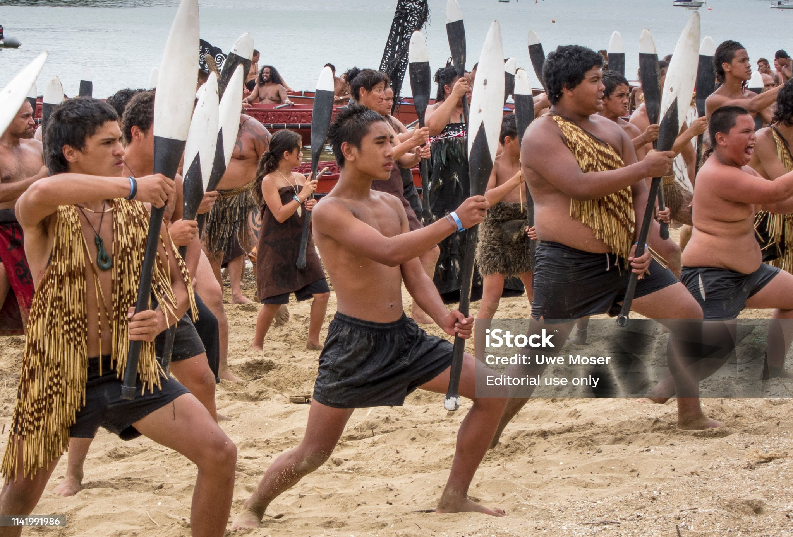
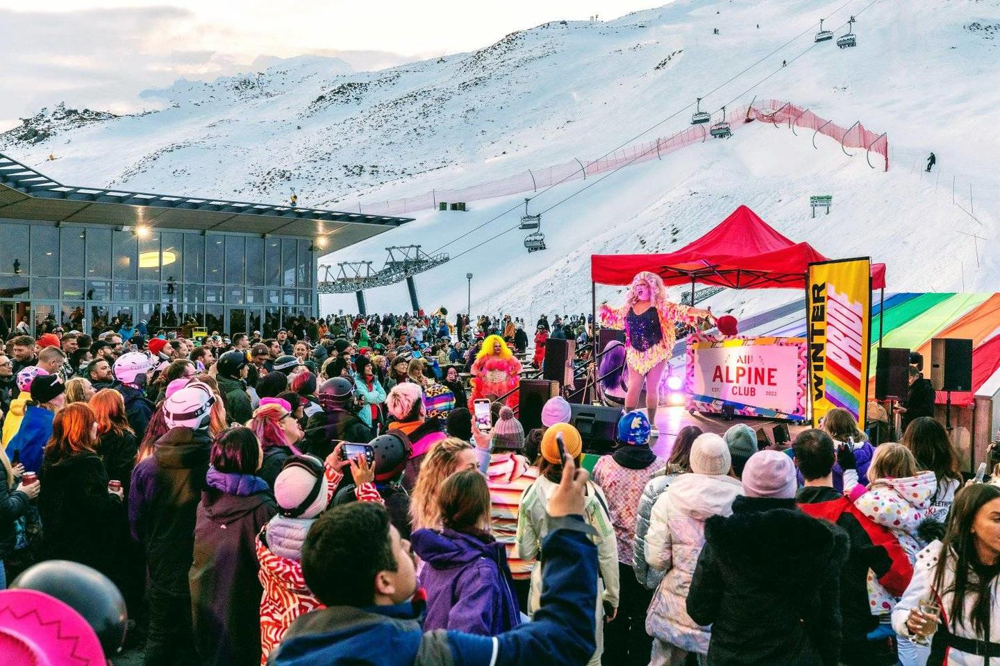

Popular Events and Festivals
New Zealand hosts many fun events every year. These are some of the most famous:
Waitangi Day
Waitangi Day is celebrated on February 6th, marking the signing of the Treaty of Waitangi in 1840 between the Māori chiefs and the British Crown. This treaty is considered the founding document of New Zealand. On Waitangi Day, people gather for cultural events, music, performances, and community activities, especially at Waitangi, where the treaty was signed. The day is a reminder of New Zealand's history and the ongoing relationship between Māori and the government.
Pasifika Festival
Pasifika Festival is celebrated in Auckland, New Zealand, every March. This festival celebrates the diverse cultures of the Pacific Islands with traditional music, dance, arts, food, and crafts from various Pacific nations, including Samoa, Tonga, Fiji, and more. It’s a vibrant event that attracts thousands of visitors and offers a rich experience of Pacific Island culture.

Queenstown Winter Festival
The Queenstown Winter Festival was a beloved annual event in Queenstown, New Zealand, celebrating the start of winter with music, fireworks, and community activities. However, as of 2023, the festival has been cancelled indefinitely due to budgeting issues and is no longer held While the Queenstown Winter Festival is no longer active, Queenstown continues to host other winter events:
Pride: Held from August 15–24, 2025, it's the Southern Hemisphere's largest winter pride festival, featuring skiing, parties, and community events
Snow Machine: Scheduled for September 9–14, 2025, this festival combines skiing with live music performances on the slopes
